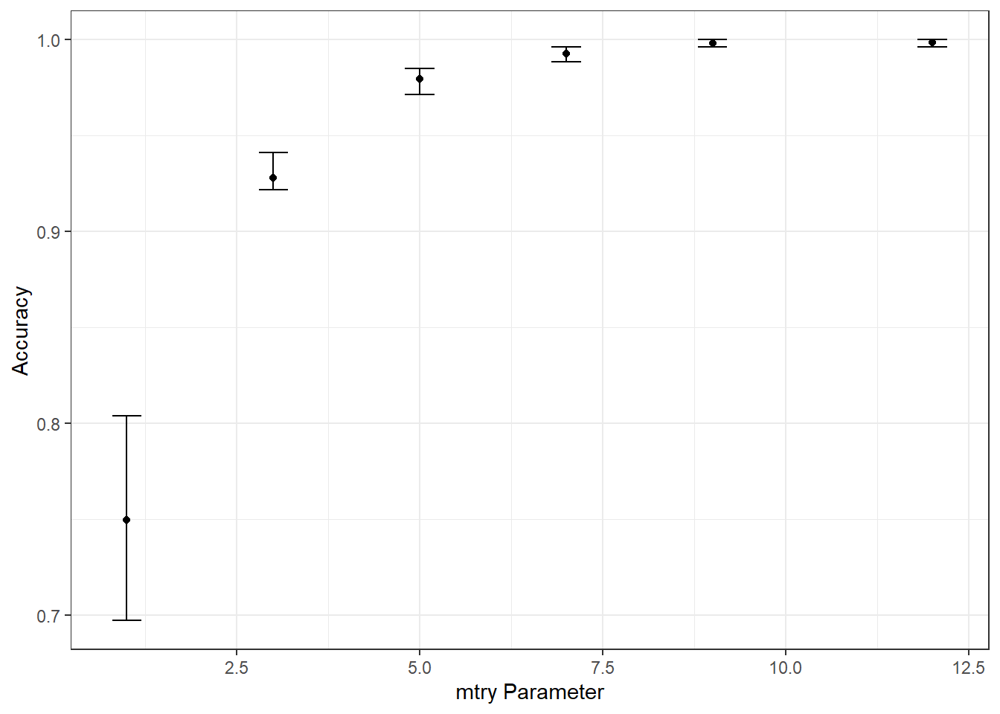

Machine learning with tidymodels: Classification Models
![]()
A gentle introduction to classification
Classification is a form of machine learning in which you train a model to predict which category an item belongs to. Categorical data has distinct ‘classes’, rather than numeric values. For example, a health clinic might use diagnostic data such as a patient’s height, weight, blood pressure, blood-glucose level to predict whether or not the patient is diabetic.
Classification is an example of a supervised machine learning technique, which means it relies on data that includes known feature values (for example, diagnostic measurements for patients) as well as known label values (for example, a classification of non-diabetic or diabetic). A classification algorithm is used to fit a subset of the data to a function that can calculate the probability for each class label from the feature values. The remaining data is used to evaluate the model by comparing the predictions it generates from the features to the known class labels.
The best way to learn about classification is to try it for yourself, so that’s what you’ll do in this exercise.
We’ll require some packages to knock-off this module. You can have them installed as:
Once you have installed the package, you can load the required packages
Dataset
Once the packages are loaded then we are going to import the dataset into the session. In this post we will explore a multi-class classification problem using the Covertype Data Set, which I obtained from the UCI Machine Learning Repository. This data set provides a total of 581,012 instances. The goal is to differentiate seven forest community types using several environmental variables including elevation, topographic aspect, topographic slope, horizontal distance to streams, vertical distance to streams, horizontal distance to roadways, hillshade values at 9AM, hillshade values at noon, hillshade values at 3PM, horizontal distance to fire points, and a wilderness area designation, a binary and nominal variable.
Rows: 581,012
Columns: 55
$ Elevation <dbl> 2596, 2590, 2804, 2785, 2595, 2579,~
$ Aspect <dbl> 51, 56, 139, 155, 45, 132, 45, 49, ~
$ Slope <dbl> 3, 2, 9, 18, 2, 6, 7, 4, 9, 10, 4, ~
$ Horizontal_Distance_To_Hydrology <dbl> 258, 212, 268, 242, 153, 300, 270, ~
$ Vertical_Distance_To_Hydrology <dbl> 0, -6, 65, 118, -1, -15, 5, 7, 56, ~
$ Horizontal_Distance_To_Roadways <dbl> 510, 390, 3180, 3090, 391, 67, 633,~
$ Hillshade_9am <dbl> 221, 220, 234, 238, 220, 230, 222, ~
$ Hillshade_Noon <dbl> 232, 235, 238, 238, 234, 237, 225, ~
$ Hillshade_3pm <dbl> 148, 151, 135, 122, 150, 140, 138, ~
$ Horizontal_Distance_To_Fire_Points <dbl> 6279, 6225, 6121, 6211, 6172, 6031,~
$ Wilderness_Area1 <dbl> 1, 1, 1, 1, 1, 1, 1, 1, 1, 1, 1, 1,~
$ Wilderness_Area2 <dbl> 0, 0, 0, 0, 0, 0, 0, 0, 0, 0, 0, 0,~
$ Wilderness_Area3 <dbl> 0, 0, 0, 0, 0, 0, 0, 0, 0, 0, 0, 0,~
$ Wilderness_Area4 <dbl> 0, 0, 0, 0, 0, 0, 0, 0, 0, 0, 0, 0,~
$ Soil_Type1 <dbl> 0, 0, 0, 0, 0, 0, 0, 0, 0, 0, 0, 0,~
$ Soil_Type2 <dbl> 0, 0, 0, 0, 0, 0, 0, 0, 0, 0, 0, 0,~
$ Soil_Type3 <dbl> 0, 0, 0, 0, 0, 0, 0, 0, 0, 0, 0, 0,~
$ Soil_Type4 <dbl> 0, 0, 0, 0, 0, 0, 0, 0, 0, 0, 0, 0,~
$ Soil_Type5 <dbl> 0, 0, 0, 0, 0, 0, 0, 0, 0, 0, 0, 0,~
$ Soil_Type6 <dbl> 0, 0, 0, 0, 0, 0, 0, 0, 0, 0, 0, 0,~
$ Soil_Type7 <dbl> 0, 0, 0, 0, 0, 0, 0, 0, 0, 0, 0, 0,~
$ Soil_Type8 <dbl> 0, 0, 0, 0, 0, 0, 0, 0, 0, 0, 0, 0,~
$ Soil_Type9 <dbl> 0, 0, 0, 0, 0, 0, 0, 0, 0, 0, 0, 0,~
$ Soil_Type10 <dbl> 0, 0, 0, 0, 0, 0, 0, 0, 0, 0, 0, 0,~
$ Soil_Type11 <dbl> 0, 0, 0, 0, 0, 0, 0, 0, 0, 0, 0, 0,~
$ Soil_Type12 <dbl> 0, 0, 1, 0, 0, 0, 0, 0, 0, 0, 0, 0,~
$ Soil_Type13 <dbl> 0, 0, 0, 0, 0, 0, 0, 0, 0, 0, 0, 0,~
$ Soil_Type14 <dbl> 0, 0, 0, 0, 0, 0, 0, 0, 0, 0, 0, 0,~
$ Soil_Type15 <dbl> 0, 0, 0, 0, 0, 0, 0, 0, 0, 0, 0, 0,~
$ Soil_Type16 <dbl> 0, 0, 0, 0, 0, 0, 0, 0, 0, 0, 0, 0,~
$ Soil_Type17 <dbl> 0, 0, 0, 0, 0, 0, 0, 0, 0, 0, 0, 0,~
$ Soil_Type18 <dbl> 0, 0, 0, 0, 0, 0, 0, 0, 0, 0, 1, 0,~
$ Soil_Type19 <dbl> 0, 0, 0, 0, 0, 0, 0, 0, 0, 0, 0, 0,~
$ Soil_Type20 <dbl> 0, 0, 0, 0, 0, 0, 0, 0, 0, 0, 0, 0,~
$ Soil_Type21 <dbl> 0, 0, 0, 0, 0, 0, 0, 0, 0, 0, 0, 0,~
$ Soil_Type22 <dbl> 0, 0, 0, 0, 0, 0, 0, 0, 0, 0, 0, 0,~
$ Soil_Type23 <dbl> 0, 0, 0, 0, 0, 0, 0, 0, 0, 0, 0, 0,~
$ Soil_Type24 <dbl> 0, 0, 0, 0, 0, 0, 0, 0, 0, 0, 0, 0,~
$ Soil_Type25 <dbl> 0, 0, 0, 0, 0, 0, 0, 0, 0, 0, 0, 0,~
$ Soil_Type26 <dbl> 0, 0, 0, 0, 0, 0, 0, 0, 0, 0, 0, 0,~
$ Soil_Type27 <dbl> 0, 0, 0, 0, 0, 0, 0, 0, 0, 0, 0, 0,~
$ Soil_Type28 <dbl> 0, 0, 0, 0, 0, 0, 0, 0, 0, 0, 0, 0,~
$ Soil_Type29 <dbl> 1, 1, 0, 0, 1, 1, 1, 1, 1, 1, 0, 0,~
$ Soil_Type30 <dbl> 0, 0, 0, 1, 0, 0, 0, 0, 0, 0, 0, 1,~
$ Soil_Type31 <dbl> 0, 0, 0, 0, 0, 0, 0, 0, 0, 0, 0, 0,~
$ Soil_Type32 <dbl> 0, 0, 0, 0, 0, 0, 0, 0, 0, 0, 0, 0,~
$ Soil_Type33 <dbl> 0, 0, 0, 0, 0, 0, 0, 0, 0, 0, 0, 0,~
$ Soil_Type34 <dbl> 0, 0, 0, 0, 0, 0, 0, 0, 0, 0, 0, 0,~
$ Soil_Type35 <dbl> 0, 0, 0, 0, 0, 0, 0, 0, 0, 0, 0, 0,~
$ Soil_Type36 <dbl> 0, 0, 0, 0, 0, 0, 0, 0, 0, 0, 0, 0,~
$ Soil_Type37 <dbl> 0, 0, 0, 0, 0, 0, 0, 0, 0, 0, 0, 0,~
$ Soil_Type38 <dbl> 0, 0, 0, 0, 0, 0, 0, 0, 0, 0, 0, 0,~
$ Soil_Type39 <dbl> 0, 0, 0, 0, 0, 0, 0, 0, 0, 0, 0, 0,~
$ Soil_Type40 <dbl> 0, 0, 0, 0, 0, 0, 0, 0, 0, 0, 0, 0,~
$ Cover_Type <dbl> 5, 5, 2, 2, 5, 2, 5, 5, 5, 5, 5, 2,~The seven community types are:
- 1 = Spruce/Fir
- 2 = Lodgepole Pine
- 3 = Ponderosa Pine
- 4 = Cottonwood/Willow
- 5 = Aspen
- 6 = Douglas Fir
- 7 = Krummholz
We need to recode the cover type with the corresponding names as follows;
# A tibble: 7 x 1
Cover_Type
<dbl>
1 5
2 2
3 1
4 7
5 3
6 6
7 4I then use dplyr count function to to compute the number of records from each community type
cover.type %>%
group_by(cover) %>%
summarise(n = n()) %>%
mutate(area_ha = (n*900)/4063,
pct = n/sum(n) * 100,
across(is.numeric, round, 2)) %>%
arrange(-n)# A tibble: 7 x 4
cover n area_ha pct
<chr> <dbl> <dbl> <dbl>
1 Lodgepole 283301 62754. 48.8
2 Spruce 211840 46925. 36.5
3 Ponderosa 35754 7920. 6.15
4 Krummholz 20510 4543. 3.53
5 Douglas 17367 3847. 2.99
6 Aspen 9493 2103. 1.63
7 Cottonwood 2747 608. 0.47The printed output suggests significant data imbalance. In order to speed up the tuning and training process, I then select out 500 samples from each class using a stratified random sample. For potentially improved results, I should use all available samples. However, this would take a lot longer to execute.
set.seed(123)
cover.type.sample = cover.type %>%
group_by(cover) %>%
sample_n(size = 500) %>%
ungroup()
cover.type.sample %>%
group_by(cover) %>%
summarise(n = n())# A tibble: 7 x 2
cover n
<chr> <int>
1 Aspen 500
2 Cottonwood 500
3 Douglas 500
4 Krummholz 500
5 Lodgepole 500
6 Ponderosa 500
7 Spruce 500Next, I use the parsnips package (Kuhn & Vaughan, 2020) to define a random forest implementation using the ranger engine in classification mode. Note the use of tune() to indicate that I plan to tune the mtry parameter. Since the data have not already been split into training and testing sets, I use the initial_split() function from rsample to define training and testing partitions followed by the training() and testing() functions to create new datasets for each split (Kuhn, Chow, & Wickham, 2020).
Define Model
Set split
I would like to normalize all continuous predictor variables and create a dummy variable from the single nominal predictor variable (“wilderness”). I define these transformations within a recipe using functions available in recipes package (Kuhn & Wickham, 2020a). This also requires defining the formula and the input data. Here, I am referencing only the training set, as the test set should not be introduced to the model at this point, as this could result in a later bias assessment of model performance. The all_numeric(), all_nominal(), and all_outcomes() functions are used to select columns on which to apply the desired transformations.
The model and pre-processing recipe are then combined into a workflow.
I then use yardstick (yerdstick?) and the metric_set() function to define the desired assessment metrics, in this case only overall accuracy. To prepare for hyperparameter tuning using five-fold cross validation, I define folds using the vfold_cv() function from rsample. Similar to the training and testing split above, the folds are stratified by the community type to maintain class balance within each fold. Lastly, I then define values of mtry to test using the dials package. It would be better to test more values and maybe optimize additional parameters. However, I am trying to decrease the time required to execute the example.
Now that the model, pre-processing steps, workflow, metrics, data partitions, and mtry values to try have been defined, I tune the model using tune_grid() from the tune package. Note that this may take several minutes. Specifically, I make sure to use the defined workflow so that the pre-processing steps defined using the recipe are used. Once completed, I collect the resulting metrics for each mtry value for each fold using collect_metrics() from tune. The summarize parameter is set to FALSE because I want to obtain all results for each fold, as opposed to aggregated results. I then calculate the minimum, maximum, and median overall accuracies for each fold using dplyr and plot the results using ggplot2.
ggplot(tune_result, aes(y=median_acc, x=mtry))+
geom_point()+
geom_errorbar(aes(ymin=min_acc, ymax=max_acc), width = .4)+
theme_bw()+
labs(x="mtry Parameter", y = "Accuracy")
The best mtry parameter is defined using the select_best() function from tune. The workflow is then finalized and the model is trained using last_fit() from tune. The collect_predictions() function from tune is used to obtain the class prediction for each sample in the withheld test set.
Lastly, I use the conf_mat() function from the yardstick package to obtain a multi-class error matrix from the reference and predicted classes for each sample in the withheld testing set.
Truth
Prediction Aspen Cottonwood Douglas Krummholz Lodgepole Ponderosa Spruce
Aspen 125 0 0 0 0 0 0
Cottonwood 0 125 0 0 0 0 0
Douglas 0 0 125 0 0 0 0
Krummholz 0 0 0 125 0 0 0
Lodgepole 0 0 0 0 124 0 0
Ponderosa 0 0 0 0 1 125 0
Spruce 0 0 0 0 0 0 125Passing the matrix to summary() will provide a set of assessment metrics calculated from the error matrix.
# A tibble: 13 x 3
.metric .estimator .estimate
<chr> <chr> <dbl>
1 accuracy multiclass 0.999
2 kap multiclass 0.999
3 sens macro 0.999
4 spec macro 1.00
5 ppv macro 0.999
6 npv macro 1.00
7 mcc multiclass 0.999
8 j_index macro 0.999
9 bal_accuracy macro 0.999
10 detection_prevalence macro 0.143
11 precision macro 0.999
12 recall macro 0.999
13 f_meas macro 0.999Concluding Remarks
Similar to the tidyverse (Wickham & Wickham, 2017), tidymodels (Kuhn & Wickham, 2020b) is a very powerful framework for creating machine learning workflows and experimental environments using a common philosophy and syntax. Although this introduction was brief and there are many more components that could be discussed, this can serve as a starting point for continued learning and experimentation. Check out the tidymodels website for additional examples and tutorials.